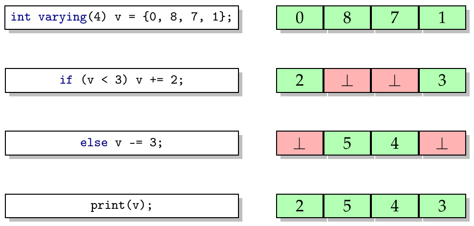

Nowadays, SIMD hardware is omnipresent in computers. Nonetheless, many software projects hardly make use of SIMD instructions: Applications are usually written in general-purpose languages like C++. However, general-purpose languages only provide poor abstractions for SIMD programming enforcing an error-prone, assembly-like programming style.
Sierra combines the full power of C++ with an intuitive and effective way to address SIMD hardware. With Sierra, the programmer can write efficient, portable and maintainable code. It is particularly easy to enhance existing code to run efficiently on SIMD machines.
Overview
Sierra's key components are vector types.
The programmer can use these types via the keyword varying.
Standard operators are overloaded to also work on such vectors:
Most importantly, the programmer can explicitly trigger vectorization of code by using vectors in control-flow-dependent expressions.
In the figure below, the condition v < 3 is of vector type.
Thus, Sierra enters a special SIMD mode.
As the condition only holds for the first and fourth element, v += 2 is only performed for the first and fourth element of v.
We also say, the first and the fourth lanes are active.
The other two lanes are inactive.
Analogously, v -= 3 is only applied to the second and third element of v.

Building
In order to build Sierra, we first fetch the official LLVM sources and then Sierra - which acts as drop-in replacement for clang. Additionally, we clone libsierra for supporting headers. We build everything with CMake.
Build Instructions
Debug Build
For a debug build, we do the following:
mkdir sierra
cd sierra
mkdir build_debug
mkdir install_debug
git clone https://github.com/sierra-lang/libsierra.git
wget http://llvm.org/releases/3.5.0/llvm-3.5.0.src.tar.xz
tar xf llvm-3.5.0.src.tar.xz
mv llvm-3.5.0.src llvm
cd llvm/tools
git clone https://github.com/sierra-lang/sierra.git clang
cd ../../build_debug
cmake ../llvm -DCMAKE_BUILD_TYPE=Debug -DBUILD_SHARED_LIBS=1 -DCMAKE_INSTALL_PREFIX=/path/to/sierra/install_debug/
make
make install
Alternatively, you can use the cmake-gui tool: cmake-gui ../llvm
Then,
- press
configure - set
CMAKE_INSTALL_PREFIXto/path/to/sierra/install_debug - set
CMAKE_BUILD_TYPEtoDebug - set
BUILD_SHARED_LIBSand - press
generate.
Release Build
For a release build, setup appropriate build_release and install_release directories, and set CMAKE_BUILD_TYPE=Release.
Trying it out
You can try out the examples in libsierra/benchmark with the provided Makefile.
Please make sure that clang++ points to your sierra build.
Otherwise the switch -fsierra, which turns on the sierra extension, won't be available.
You may also want to checkout our wiki.
Status
Supported Control-Flow Constructs
The following constructs are currently supported in a vectorial context. They still work as normal in scalar context.
| Feature | Supported? |
|---|---|
if ... else |
|
while |
|
do ... while |
|
for |
|
break |
|
continue |
|
return |
|
switch |
 |
case |
|
goto |
|
expr || expr |
|
expr && expr |
|
!expr |
|
expr ? expr : expr |
Type System
| Feature | Supported? |
|---|---|
varying primitive types |
|
pointers and references to varying types |
|
varying pointers and references |
 |
varying structures |
some initial support is there |
Known Issues
- The semantic analysis which checks whether vector lengths match is currently disabled. There are problems with template instantiation. Mixing vector lengths in an illegal way causes crashes.
-
The attribute
spmd(L)cannot depend on a template parameterL. -
Sometimes code generated with
-O0is incorrect. This is an LLVM bug. Building with-O2fixes this issue.
Publications
Roland Leißa, Immanuel Haffner, and Sebastian Hack
Sierra: A SIMD Extension for C++.
In Proceedings of Proceedings of the Workshop on Programming models for SIMD/Vector processing (WPMVP), 2014.
Roland Leißa, Sebastian Hack, Ingo Wald, William R. Mark and Matt Pharr
Extending C/C++ for Portable SIMD Programming.
Poster Presentation at the Intel Developer Forum (IDF), San Francisco, CA, USA, September 10-12, 2013.
Roland Leißa, Ingo Wald, and Sebastian Hack
Extending a C-like Language for Portable SIMD Programming.
In Proceedings of the Conference on Principles and Practice of Parallel Programming (PPoPP), 2012.